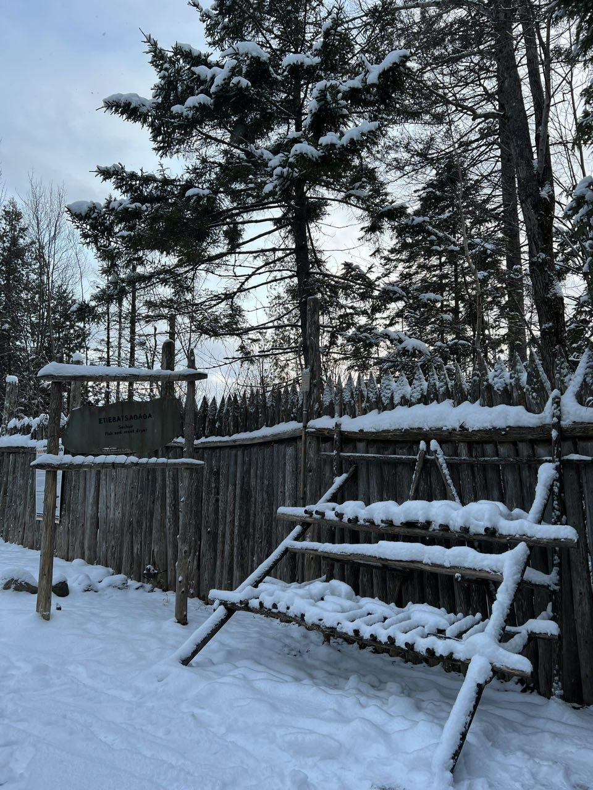
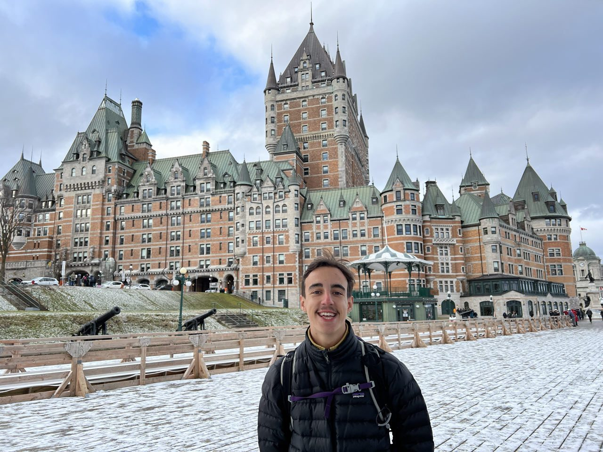

Décembre · Ville & culture
Marchés de Noël, en amoureux
Réveil au petit matin pour partir pour Québec, mais le loueur nous informe qu'un pneu est crevé — un peu de sommeil supplémentaire le temps qu'il répare tout ça. Trois heures de route plus tard, arrivée à notre auberge, en plein cœur de la ville, avec un parking couvert qui nous évitera de gratter le pare-brise le lendemain.
Il fait assez froid, mais on visite la vieille ville et ses forteresses, ses décos de Noël, la basse-ville et une boutique de queues de castor. Puis les marchés de Noël, très grands et beaux, avant un restaurant entièrement vegan excellent — pendant qu'il neige à gros flocons dehors. La neige continue toute la nuit, et on se réveille avec une petite couche dans laquelle on se bat à coups de boules de neige, avant d'aller explorer la chute Montmorency, la plus haute du Québec, impressionnante sous la neige.


